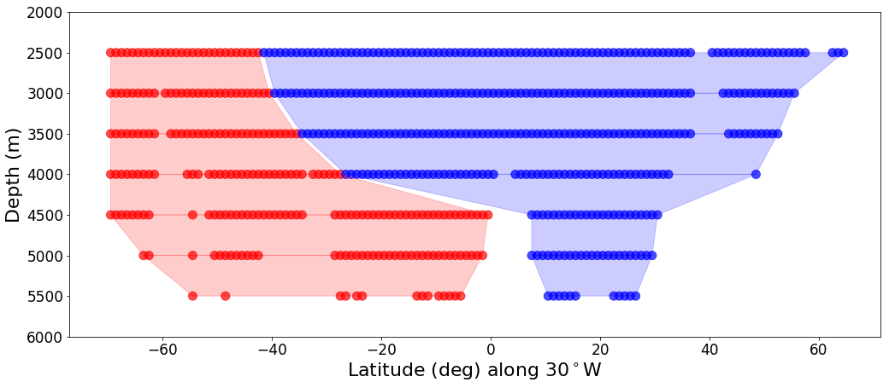

from matplotlib.mlab import griddata
from matplotlib import gridspec
import matplotlib.pyplot as plt
from matplotlib import cm, rcParams
title_sz = 27
axis_sz = 22
tick_sz = 21
import numpy as np
import pylab as pl
from scipy import stats
%matplotlib inline
from chem_ocean.ocean_data import dataFetcher, water_column
from chem_ocean.ocean_plt import rawPlotter as RawPlotter
Capstone#
Probing the Data#
Tracers#
# produce section view of data for a specified tracer along a line of longitude
line_lon = -30
min_lat, max_lat = -80, 80
tracer = 'phosphate'
newPlot = RawPlotter(['section'], [tracer])
fig, ax_out = newPlot.make()
dataset = dataFetcher()
dataset.get_section('NS_section', line_lon, [min_lat, max_lat], [tracer])
maxdepth_1 = max(dataset._d)
fig, ax_out[0] = newPlot.add_section(fig, ax_out[0], dataset, tracer, colorbar = 'y', share_limits =True)
ax_out[0].set_ylim([5500, 0])
ax_out[0].plot([-75,-68, -60,-50,-10], [0, 4000, 4800,5000, 5000], c = 'k') #AABW
ax_out[0].arrow(-50, 5000, 40, 0, head_width=100, head_length=5, fc='k', ec='k')
ax_out[0].text(-25, 4800, '$AABW$', color='k', size=24)
ax_out[0].plot([-58,-50,-45,-37, -25, -20, -10, 0], [0, 1000, 1350, 1350, 1000, 800, 600, 600], c = 'k') #AABW
ax_out[0].arrow(-10, 600, 10, 0, head_width=100, head_length=5, fc='k', ec='k')
ax_out[0].text(-10, 1000, '$AAIW$', color='k', size=24)
ax_out[0].plot([-58,-62,-65,-67, -67], [3000, 3200, 3400, 3800, 4000], c = 'k') #AABW
ax_out[0].arrow(-67, 4000, 0, .2, head_width=2, head_length=200, fc='k', ec='k')
ax_out[0].text(-60, 2900, '$CDW$', color='k', size=24)
['section']
12.0
0 4
<matplotlib.text.Text at 0x123d7b978>
# produce section view of data for a specified tracer along a line of longitude
line_lon = -30
min_lat, max_lat = -80, 80
tracer = 'oxygen'
newPlot = RawPlotter(['section'], [tracer])
fig, ax_out = newPlot.make()
dataset = dataFetcher()
dataset.get_section('NS_section', line_lon, [min_lat, max_lat], [tracer])
maxdepth_1 = max(dataset._d)
fig, ax_out[0] = newPlot.add_section(fig, ax_out[0], dataset, tracer, colorbar = 'y', share_limits =True)
ax_out[0].set_ylim([5500, 0])
ax_out[0].plot([-75,-68, -60,-50,-10], [0, 4000, 4800,5000, 5000], c = 'k') #AABW
ax_out[0].arrow(-50, 5000, 40, 0, head_width=100, head_length=5, fc='k', ec='k')
ax_out[0].text(-25, 4800, '$AABW$', color='k', size=24)
ax_out[0].plot([-58,-50,-45,-37, -25, -20, -10, 0], [0, 1000, 1350, 1350, 1000, 800, 600, 600], c = 'k') #AABW
ax_out[0].arrow(-10, 600, 10, 0, head_width=100, head_length=5, fc='k', ec='k')
ax_out[0].text(-10, 1000, '$AAIW$', color='k', size=24)
ax_out[0].plot([-58,-62,-65,-67, -67], [3000, 3200, 3400, 3800, 4000], c = 'k') #AABW
ax_out[0].arrow(-67, 4000, 0, .2, head_width=2, head_length=200, fc='k', ec='k')
ax_out[0].text(-60, 2900, '$CDW$', color='k', size=24)
['section']
12.0
0 10
<matplotlib.text.Text at 0x115da5828>
# produce section view of data for a specified tracer along a line of longitude
line_lon = -30
min_lat, max_lat = -80, 80
tracer = 'salinity'
newPlot = RawPlotter(['section'], [tracer])
fig, ax_out = newPlot.make()
dataset = dataFetcher()
dataset.get_section('NS_section', line_lon, [min_lat, max_lat], [tracer])
maxdepth_1 = max(dataset._d)
fig, ax_out[0] = newPlot.add_section(fig, ax_out[0], dataset, tracer, colorbar = 'y', share_limits =True)
ax_out[0].set_ylim([5500, 0])
ax_out[0].plot([-75,-68, -60,-50,-10], [0, 4000, 4800,5000, 5000], c = 'k') #AABW
ax_out[0].arrow(-50, 5000, 40, 0, head_width=100, head_length=5, fc='k', ec='k')
ax_out[0].text(-25, 4800, '$AABW$', color='k', size=24)
ax_out[0].plot([-58,-50,-45,-37, -25, -20, -10, 0], [0, 1000, 1350, 1350, 1000, 800, 600, 600], c = 'k') #AABW
ax_out[0].arrow(-10, 600, 10, 0, head_width=100, head_length=5, fc='k', ec='k')
ax_out[0].text(-10, 1000, '$AAIW$', color='k', size=24)
ax_out[0].plot([-58,-62,-65,-67, -67], [3000, 3200, 3400, 3800, 4000], c = 'k') #AABW
ax_out[0].arrow(-67, 4000, 0, .2, head_width=2, head_length=200, fc='k', ec='k')
ax_out[0].text(-60, 2900, '$CDW$', color='k', size=24)
['section']
12.0
32 36.4
<matplotlib.text.Text at 0x11654be10>
# Produce three histogram figure (phosphate, salinity, temperature) with overlays of all water
# below 3000 m, all water in the Atlantic below 3000m, and all water in the high latitude
# Atlantic below 3000m
print('Atlantic basin below 3000 m (dark), global ocean below 3000 m (light)')
tracers = {'phosphate': ['Phosphate ($\mu$mol/l)', [0, 4], 'g'],
'salinity': ['Salinity (psu)', [33.5, 36], 'r'],
'temperature': ['Temperature (degC)', [-3, 5], 'b']}
_x_var = 'longitude'
_y_var = 'latitude'
fig = plt.figure(figsize = (10,6))
gs = gridspec.GridSpec(1,len(tracers), width_ratios=np.ones(len(tracers)), wspace=0.5, hspace = 0.4)
ax_out = []
for ik, tracer in enumerate(tracers):
ax_out.append(fig.add_subplot(gs[ik]))
_in_var_names = [tracer]
sum_names = ['station', 'longitude', 'latitude', 'depth'] + _in_var_names
cols = ', '.join(sum_names)
# Atlantic Basin below 2500m
query = 'SELECT '+ cols+' FROM woa13 WHERE depth>=3000 and longitude >-70 and longitude < 15'
dataset = dataFetcher()
dataset.return_from_psql(query, sum_names, _in_var_names, _x_var, _y_var)
n, bins, patches = ax_out[ik].hist(dataset._feat_data, 100, color = tracers[tracer][2], alpha = .4)
# Global Ocean below 2500m
query = 'SELECT '+ cols+' FROM woa13 WHERE depth>=3000'
dataset2 = dataFetcher()
dataset2.return_from_psql(query, sum_names, _in_var_names, _x_var, _y_var)
n, bins, patches = ax_out[ik].hist(dataset2._feat_data, 100, color = tracers[tracer][2], alpha = .2)
dataset_NA = dataFetcher()
dataset_NA.return_from_psql('SELECT latitude, longitude, depth, {} from woa13 WHERE latitude > 50 and longitude < 15 and longitude >-70 and depth>=3000'.format(tracer),['latitude', 'longitude', 'depth', tracer], [tracer], 'longitude', 'latitude')
n, bins, patches = ax_out[ik].hist(dataset_NA._feat_data, 20, color = tracers[tracer][2], alpha = 1)
dataset_SA = dataFetcher()
dataset_SA.return_from_psql('SELECT latitude, longitude, depth, {} from woa13 WHERE latitude <-50 and longitude < 15 and longitude >-70 and depth>=4000'.format(tracer),['latitude', 'longitude', 'depth', tracer], [tracer], 'longitude', 'latitude')
n, bins, patches = ax_out[ik].hist(dataset_SA._feat_data, 20, color = tracers[tracer][2], alpha = 1)
plt.yscale('log', nonposy='clip')
# # Global Ocean below
# query = 'SELECT '+ cols+' FROM woa13'
# dataset3 = dataFetcher()
# dataset3.return_from_psql(query, sum_names, _in_var_names, _x_var, _y_var)
# n, bins, patches = ax_out[ik].hist(dataset3._feat_data, 50, color = tracers[tracer][2], alpha = .1)
ax_out[ik].set_xlim(tracers[tracer][1])
ax_out[ik].set_ylabel('Counts', fontsize=axis_sz-4)
ax_out[ik].set_xlabel(tracers[tracer][0], fontsize=axis_sz-5)
xtickNames = ax_out[ik].get_xticklabels()
ytickNames = ax_out[ik].get_yticklabels()
for names in [ytickNames, xtickNames]:
plt.setp(names, rotation=0, fontsize=tick_sz-4)
name1 = 'phosphate_salinity_temp'+'_alldata_Atl_logscale'
path = 'raw_demo_plots/histograms/'
plt.savefig(path+name1+'.png', dpi=None, facecolor='w', edgecolor='w',
orientation='portrait', papertype=None, format=None,
transparent=False, bbox_inches=None, pad_inches=0.2,
frameon=None)
Atlantic basin below 2,500 m (dark), global ocean below 2,500 m (light)
Analytical Investigations#
Q1: NADW and AABW, statistically different?#
# Two colum plot with trajectories of latitude v. tracer on the left and
# histograms of data below 3000m on the right
tracers = ['phosphate', 'salinity', 'temperature']
line_lon = -30
min_lat, max_lat = -70, 80
fig = plt.figure(figsize=(18, 14))
gs = gridspec.GridSpec(len(tracers),2, width_ratios=[1,1], wspace=0.4, hspace = 0.4)
ax_out = []
for ik in range(len(tracers)*2):
ax_out.append(fig.add_subplot(gs[ik]))
for ik, tracer in enumerate(tracers):
print(tracer)
dataset_NA = dataFetcher()
dataset_NA.return_from_psql('SELECT latitude, longitude, depth, {} from woa13 WHERE latitude <70 and latitude > 50 and longitude < -20 and longitude >-40 and depth>=3000'.format(tracer),['latitude', 'longitude', 'depth', tracer], [tracer], 'longitude', 'latitude')
NAtl_60 = water_column(dataset_NA, 'column')
dataset_SA = dataFetcher()
dataset_SA.return_from_psql('SELECT latitude, longitude, depth, {} from woa13 WHERE latitude <-50 and latitude > -70 and longitude < -20 and longitude >-40 and depth>=3000'.format(tracer),['latitude', 'longitude', 'depth', tracer], [tracer], 'longitude', 'latitude')
SAtl_60 = water_column(dataset_SA, 'column')
section_dataset = dataFetcher()
section_dataset.get_section('NS_section', line_lon, [min_lat, max_lat], [tracer])
ax_out[2*ik+1].hist(dataset_SA._feat_data, label = 'SO', alpha=.5)
ax_out[2*ik+1].hist(dataset_NA._feat_data, label = 'NA', alpha = .5)
ax_out[2*ik+1].set_ylabel('Counts', fontsize=axis_sz-4)
ax_out[2*ik+1].set_xlabel(tracer.title(), fontsize=axis_sz-4)
t2, p2 = stats.ttest_ind(dataset_NA._feat_data,dataset_SA._feat_data, equal_var=False)
if p2>-1:
print('p value:', p2)
depths = [3000, 3500, 4000, 4500, 5000, 5500]
for depth in depths:
data_NA = dataset_NA._feat_data[dataset_NA._d==depth]
data_SA = dataset_SA._feat_data[dataset_SA._d==depth]
ax_out[2*ik].plot(section_dataset._x[section_dataset._d==depth], section_dataset._feat_data[section_dataset._d==depth], label=str(depth))
ax_out[2*ik].set_ylabel(tracer.title(), fontsize=axis_sz-4)
ax_out[2*ik].set_xlabel('Latitude (deg) along {}$^\circ$W'.format(-line_lon), fontsize=axis_sz-4)
try:
ax_out[2*ik+1].set_xlim([min([min(data_NA), min(data_SA)])-.5, max([max(data_NA), max(data_SA)])+.5])
except:
continue
if ik == 0:
handles, labels = ax_out[2*ik+1].get_legend_handles_labels()
# sort both labels and handles by labels
labels, handles = zip(*sorted(zip(labels, handles), key=lambda t: t[0]))
ax_out[2*ik+1].legend(handles, labels, prop={'size': 14})
ax_out[2*ik].legend(prop={'size': 14})
# set tick parameters
for ij in [2*ik, 2*ik+1]:
xtickNames = ax_out[ij].get_xticklabels()
ytickNames = ax_out[ij].get_yticklabels()
for names in [ytickNames, xtickNames]:
plt.setp(names, rotation=0, fontsize=tick_sz-4)
name1 = 'phosphate_salinity_temperature'+'_depths_Atl'
path = 'raw_demo_plots/'
plt.savefig(path+name1+'.png', dpi=None, facecolor='w', edgecolor='w',
orientation='portrait', papertype=None, format=None,
transparent=False, bbox_inches=None, pad_inches=0.2,
frameon=None)
phosphate
p value: 0.0
salinity
p value: 0.0
temperature
p value: 0.0
# same plot at all, with histograms separated out by depth
tracers = ['phosphate', 'salinity', 'temperature']
line_lon = -30
min_lat, max_lat = -70, 80
fig = plt.figure(figsize=(18, 14))
gs = gridspec.GridSpec(len(tracers),2, width_ratios=[1,1], wspace=0.4, hspace = 0.4)
ax_out = []
for ik in range(len(tracers)*2):
ax_out.append(fig.add_subplot(gs[ik]))
for ik, tracer in enumerate(tracers):
print(tracer)
dataset_NA = dataFetcher()
dataset_NA.return_from_psql('SELECT latitude, longitude, depth, {} from woa13 WHERE latitude <70 and latitude > 50 and longitude < -20 and longitude >-40 order by depth'.format(tracer),['latitude', 'longitude', 'depth', tracer], [tracer], 'longitude', 'latitude')
NAtl_60 = water_column(dataset_NA, 'column')
dataset_SA = dataFetcher()
dataset_SA.return_from_psql('SELECT latitude, longitude, depth, {} from woa13 WHERE latitude <-50 and latitude > -70 and longitude < -20 and longitude >-40 order by depth'.format(tracer),['latitude', 'longitude', 'depth', tracer], [tracer], 'longitude', 'latitude')
SAtl_60 = water_column(dataset_SA, 'column')
section_dataset = dataFetcher()
section_dataset.get_section('NS_section', line_lon, [min_lat, max_lat], [tracer])
depths = [3000, 3500, 4000, 4500, 5000, 5500]
for depth in depths:
data_NA = dataset_NA._feat_data[dataset_NA._d==depth]
data_SA = dataset_SA._feat_data[dataset_SA._d==depth]
ax_out[2*ik+1].hist(data_SA, label = 'SO-'+ str(depth)+'m', alpha=.5)
ax_out[2*ik+1].hist(data_NA, label = 'NA-'+ str(depth)+'m', alpha = .5)
ax_out[2*ik+1].set_ylabel('Counts', fontsize=axis_sz-4)
ax_out[2*ik+1].set_xlabel(tracer.title(), fontsize=axis_sz-4)
t2, p2 = stats.ttest_ind(data_NA,data_SA, equal_var=False)
if p2>-1:
print('\t','depth:', depth,'; p value:', p2)
ax_out[2*ik].plot(section_dataset._x[section_dataset._d==depth], section_dataset._feat_data[section_dataset._d==depth], label=str(depth))
ax_out[2*ik].set_ylabel(tracer.title(), fontsize=axis_sz-4)
ax_out[2*ik].set_xlabel('Latitude (deg) along {}$^\circ$W'.format(-line_lon), fontsize=axis_sz-4)
try:
ax_out[2*ik+1].set_xlim([min([min(data_NA), min(data_SA)])-.5, max([max(data_NA), max(data_SA)])+.5])
except:
continue
if ik == 0:
handles, labels = ax_out[2*ik+1].get_legend_handles_labels()
# sort both labels and handles by labels
labels, handles = zip(*sorted(zip(labels, handles), key=lambda t: t[0]))
ax_out[2*ik+1].legend(handles, labels)
ax_out[2*ik].legend(prop={'size': 10})
# set tick parameters
for ij in [2*ik, 2*ik+1]:
xtickNames = ax_out[ij].get_xticklabels()
ytickNames = ax_out[ij].get_yticklabels()
for names in [ytickNames, xtickNames]:
plt.setp(names, rotation=0, fontsize=tick_sz-4)
phosphate
depth: 3000 ; p value: 2.66283833081e-219
depth: 3500 ; p value: 6.82738100016e-73
depth: 4000 ; p value: 1.8625828055e-15
salinity
depth: 3000 ; p value: 1.7033218313e-176
depth: 3500 ; p value: 2.7741844131e-125
depth: 4000 ; p value: 2.31425147662e-42
temperature
depth: 3000 ; p value: 2.16034546348e-184
depth: 3500 ; p value: 8.74118490401e-240
depth: 4000 ; p value: 1.49892883161e-25
# Same plot as above, run for the Pacific as a point of comparison
tracers = ['phosphate', 'salinity', 'temperature']
line_lon = -150
min_lat, max_lat = -80, 80
fig = plt.figure(figsize=(18, 14))
gs = gridspec.GridSpec(len(tracers),2, width_ratios=[1,1], wspace=0.4, hspace = 0.4)
ax_out = []
for ik in range(len(tracers)*2):
ax_out.append(fig.add_subplot(gs[ik]))
for ik, tracer in enumerate(tracers):
print(tracer)
dataset_NP = dataFetcher()
dataset_NP.return_from_psql('SELECT latitude, longitude, depth, {} from woa13 WHERE latitude <70 and latitude > 50 and longitude < -20 and longitude >-40 order by depth'.format(tracer),['latitude', 'longitude', 'depth', tracer], [tracer], 'longitude', 'latitude')
NPac_60 = water_column(dataset_NP, 'column')
dataset_SP = dataFetcher()
dataset_SP.return_from_psql('SELECT latitude, longitude, depth, {} from woa13 WHERE latitude <-50 and latitude > -70 and longitude < -20 and longitude >-40 order by depth'.format(tracer),['latitude', 'longitude', 'depth', tracer], [tracer], 'longitude', 'latitude')
SPac_60 = water_column(dataset_SP, 'column')
section_dataset = dataFetcher()
section_dataset.get_section('NS_section', line_lon, [min_lat, max_lat], [tracer])
depths = [2000, 2500, 3000, 3500, 4000, 4500, 5000, 5500]
for depth in depths:
data_NP = dataset_NP._feat_data[dataset_NP._d==depth]
data_SP = dataset_SP._feat_data[dataset_SP._d==depth]
ax_out[2*ik+1].hist(data_SP, label = 'SO-'+ str(depth)+'m', alpha=.5)
ax_out[2*ik+1].hist(data_NP, label = 'NP-'+ str(depth)+'m', alpha = .5)
ax_out[2*ik+1].set_ylabel('Counts', fontsize=axis_sz-4)
ax_out[2*ik+1].set_xlabel(tracer.title(), fontsize=axis_sz-4)
t2, p2 = stats.ttest_ind(data_NP,data_SP, equal_var=False)
if p2>-1:
print('\t','depth:', depth,'; p value:', p2)
ax_out[2*ik].plot(section_dataset._x[section_dataset._d==depth], section_dataset._feat_data[section_dataset._d==depth], label=str(depth))
ax_out[2*ik].set_ylabel(tracer.title(), fontsize=axis_sz-4)
ax_out[2*ik].set_xlabel('Latitude (deg) along {}$^\circ$W'.format(-line_lon), fontsize=axis_sz-4)
try:
ax_out[2*ik+1].set_xlim([min([min(data_NA), min(data_SA)])-.5, max([max(data_NP), max(data_SP)])+.5])
except:
continue
if ik == 0:
handles, labels = ax_out[2*ik+1].get_legend_handles_labels()
# sort both labels and handles by labels
labels, handles = zip(*sorted(zip(labels, handles), key=lambda t: t[0]))
ax_out[2*ik+1].legend(handles, labels)
ax_out[2*ik].legend(prop={'size': 10})
# set tick parameters
for ij in [2*ik, 2*ik+1]:
xtickNames = ax_out[ij].get_xticklabels()
ytickNames = ax_out[ij].get_yticklabels()
for names in [ytickNames, xtickNames]:
plt.setp(names, rotation=0, fontsize=tick_sz-4)
phosphate
depth: 2000 ; p value: 0.0
depth: 2500 ; p value: 0.0
depth: 3000 ; p value: 2.66283833081e-219
depth: 3500 ; p value: 6.82738100016e-73
depth: 4000 ; p value: 1.8625828055e-15
salinity
depth: 2000 ; p value: 0.0
depth: 2500 ; p value: 0.0
depth: 3000 ; p value: 1.7033218313e-176
depth: 3500 ; p value: 2.7741844131e-125
depth: 4000 ; p value: 2.31425147662e-42
temperature
depth: 2000 ; p value: 0.0
depth: 2500 ; p value: 0.0
depth: 3000 ; p value: 2.16034546348e-184
depth: 3500 ; p value: 8.74118490401e-240
depth: 4000 ; p value: 1.49892883161e-25
Q2: How far does Southern Ocean source water extend?#
Applying the two end-member mixing model to the Atlantic#

fig, ax = plt.subplots(nrows=1, ncols=1, figsize=(17, 7), facecolor='w')
tracer = 'salinity'
dataset = dataFetcher()
dataset.get_section('NS_section', line_lon, [min_lat, max_lat], [tracer])
depths = [2500, 3000, 3500, 4000, 4500, 5000, 5500]
r = []
b = []
d_traj = {}
for ij, dpth in enumerate(depths):
Atl = water_column(dataset, 'traj', depth= dpth)
Atl.get_mixing_labels('two_endmember')
d_traj[dpth] = Atl
ax.scatter(Atl._ax_avgd, [dpth for ik in range(len(Atl._feat_data_avgd))], c = Atl.mixing_labels, alpha = .7, s=100)
ax.set_ylim([6000,2000])
# create lists of latitudes where there are red points and blue points
x_int_r = []
x_int_b = []
for ik in range(len(Atl._feat_data_avgd)):
if Atl.mixing_labels[ik] == 'r':
x_int_r.append(Atl._ax_avgd[ik])
else:
x_int_b.append(Atl._ax_avgd[ik])
# create lists of bounding points for each depth
r.append([dpth, x_int_r[0], x_int_r[-1]])
b.append([dpth, x_int_b[0], x_int_b[-1]])
### fill code
r_pairs = [[r[n-1], r[n]] for n in range(1,len(r))]
b_pairs = [[b[n-1], b[n]] for n in range(1,len(b))]
pair_sets = {'r':[r_pairs, []], 'b':[b_pairs,[]]}
for color in pair_sets.keys():
for pair in pair_sets[color][0]:
ul = [pair[0][1], pair[0][0]]
ur = [pair[0][2], pair[0][0]]
ll = [pair[1][1], pair[1][0]]
lr = [pair[1][2], pair[1][0]]
xs = [ik[0] for ik in [ll, ul, ur, lr]]
ys = [ik[1] for ik in [ll, ul, ur, lr]]
pair_sets[color][1].append([xs, ys])
for d in pair_sets[color][1]:
ax.fill(d[0],d[1], c=color, alpha=.2)
ax.set_ylim([6000, 2000])
ax.set_ylabel('Depth (m)', fontsize=axis_sz)
ax.set_xlabel('Latitude (deg) along {}$^\circ$W'.format(-line_lon), fontsize=axis_sz)
# set tick parameters
xtickNames = ax.get_xticklabels()
ytickNames = ax.get_yticklabels()
for names in [ytickNames, xtickNames]:
plt.setp(names, rotation=0, fontsize=tick_sz-4)
name1 = 'two_endmember_Atlantic'
path = 'raw_demo_plots/connectedness/'
plt.savefig(path+name1+'.png', dpi=None, facecolor='w', edgecolor='w',
orientation='portrait', papertype=None, format=None,
transparent=False, bbox_inches=None, pad_inches=0.2,
frameon=None)

Q3: Can we trace water formation statistically?#
Connectedness using t-test#

Applying connectedness to the Atlantic Ocean#
class minisection:
'''
outputs a minisection with all tracer data over a short trajectory at each specified depth.
depths are determined by the d_traj
'''
def __init__(self, d_traj, nlat, slat):
self.depth_bins = d_traj.keys()
self.nlat = nlat
self.slat = slat
self.d = {}
for depth in self.depth_bins:
self.d[depth] =d_traj[depth]._feat_data[(d_traj[depth]._x<=nlat)&(d_traj[depth]._x>slat) ] # pull averaged feature data from some depth that is
# self.d[depth] =d_traj[depth]._feat_data_avgd[(d_traj[depth]._ax_avgd<nlat) &(d_traj[depth]._ax_avgd>slat) ] # pull averaged feature data from some depth that is
class paths:
def __init__(self, connectivity_window, minisections, pthresh1, pthresh2):
self.window = connectivity_window
self.pthresh1 = pthresh1
self.pthresh2 = pthresh2
self.d_paths = {}
for ik in range(len(minisections)-1):
mini_sec1 = minisections[ik]
mini_sec2 = minisections[ik+1]
for depth1 in mini_sec1.depth_bins:
self.d_paths[(mini_sec1.slat,depth1)]= []
# check for directly vertical connectedness
try:
# todo: should be next bin, not 500m bin because not all bins are 500m
t, p = stats.ttest_ind(mini_sec1.d[depth1+500],mini_sec1.d[depth1], equal_var=False) #down
if p>self.pthresh1:
if p>self.pthresh2:
self.d_paths[(mini_sec1.slat,depth1)].append((mini_sec1.slat,depth1+500, p))
else:
self.d_paths[(mini_sec1.slat,depth1)].append((mini_sec1.slat,depth1+500, p))
except:
continue
# check for horizontal, diagonal up, diagonal down connectedness
for depth2 in mini_sec2.depth_bins:
if (depth2 <= depth1+self.window) and (depth2 >= depth1-self.window): #horizontal, up diagonal, down diagonal
t, p = stats.ttest_ind(mini_sec2.d[depth2],mini_sec1.d[depth1], equal_var=False)
if p>self.pthresh1:
if p>self.pthresh2:
self.d_paths[(mini_sec1.slat,depth1)].append((mini_sec2.slat,depth2, p))
else:
self.d_paths[(mini_sec1.slat,depth1)].append((mini_sec2.slat,depth2, p))
tracer_d = {'temperature':'blue', 'salinity': 'red', 'phosphate': 'green'}
# for tracer in tracer_d.keys():
def make_connectedness_plot(tracer, ax, line_lon, min_lat, max_lat, depths, lat_bins):
dataset = dataFetcher()
dataset.get_section('NS_section', line_lon, [min_lat, max_lat], [tracer])
d_traj = {}
# standardize the depths of interest between locations
for dpth in depths:
Atl = water_column(dataset, 'traj', depth= dpth)
d_traj[dpth] = Atl
# create sections that are 3 deg x 3 deg and however deep data is available
minisections = []
for (slat, nlat) in lat_bins:
minisections.append(minisection(d_traj, nlat, slat)) #
# calculate connectedness between section depths (vertical, horizontal, diagonal)
Atl_paths = paths(500, minisections, .01, .05) # window for diagonal, sections list, p values
# fig = plt.figure(figsize = (13, 8))
# ax = fig.add_subplot(111)
for key in Atl_paths.d_paths.keys():
values = Atl_paths.d_paths[key]
for value in values:
ax.plot([key[0], value[0]],[key[1], value[1]], c = tracer_d[tracer] ,alpha = 1-(1-3*value[2]) )
ax.set_ylabel('Depth (m)', fontsize=axis_sz)
ax.set_xlabel('Latitude (deg) along {}$^\circ$W'.format(-line_lon), fontsize=axis_sz)
# set tick parameters
xtickNames = ax.get_xticklabels()
ytickNames = ax.get_yticklabels()
for names in [ytickNames, xtickNames]:
plt.setp(names, rotation=0, fontsize=tick_sz-4)
# ax.set_title(tracer)
ax.set_ylim([6000, -100])
return ax
lat_bins = [(x, x+3) for x in range(-80,80, 4)]
depths = [x for x in range(0,6500, 250)]
# three degree resolution connectivity plot
depths = [x for x in range(0,6500, 250)]
line_lon = -30
min_lat, max_lat = -80, 80
fig = plt.figure(figsize = (10, 10))
ax1 = fig.add_subplot(211)
lat_bins = [(x, x+3) for x in range(-80,80, 3)]
ax1 = make_connectedness_plot('temperature', ax1, line_lon, min_lat, max_lat, depths, lat_bins)
ax1 = make_connectedness_plot('salinity', ax1, line_lon, min_lat, max_lat, depths, lat_bins)
ax1.text(40, 4600, 'Salinity', color='R', size=24)
ax1.text(40, 5600, 'Temp', color='b', size=24)
ax1.xaxis.label.set_visible(False)
ax3 = fig.add_subplot(212)
lat_bins = [(x, x+3) for x in range(-80,80, 3)]
ax3 = make_connectedness_plot('phosphate', ax3, line_lon, min_lat, max_lat, depths, lat_bins)
ax3.text(40, 5000, 'PO$_4$', color='g', size=24)
name1 = 'salinity_temp_po4_connectedness_30W_3deg'
path = 'raw_demo_plots/connectedness/'
plt.savefig(path+name1+'.png', dpi=None, facecolor='w', edgecolor='w',
orientation='portrait', papertype=None, format=None,
transparent=False, bbox_inches=None, pad_inches=0.2,
frameon=None)
/usr/local/lib/python3.6/site-packages/numpy/core/fromnumeric.py:3146: RuntimeWarning: Degrees of freedom <= 0 for slice
**kwargs)
/usr/local/lib/python3.6/site-packages/numpy/core/_methods.py:127: RuntimeWarning: invalid value encountered in double_scalars
ret = ret.dtype.type(ret / rcount)
# three degree and 4 degree resolution comparison plot for the Atlantic
depths = [x for x in range(0,6500, 250)]
line_lon = -30
min_lat, max_lat = -80, 80
fig = plt.figure(figsize = (20, 10))
ax1 = fig.add_subplot(221)
lat_bins = [(x, x+3) for x in range(-80,80, 3)]
ax1 = make_connectedness_plot('temperature', ax1, line_lon, min_lat, max_lat, depths, lat_bins)
ax1 = make_connectedness_plot('salinity', ax1, line_lon, min_lat, max_lat, depths, lat_bins)
ax1.set_title('3 degree resolution', fontsize=axis_sz)
ax1.text(40, 4600, 'Salinity', color='R', size=24)
ax1.text(40, 5600, 'Temp', color='b', size=24)
ax1.xaxis.label.set_visible(False)
ax2 = fig.add_subplot(222)
lat_bins = [(x, x+4) for x in range(-80,80, 4)]
ax2 = make_connectedness_plot('temperature', ax2, line_lon, min_lat, max_lat, depths, lat_bins)
ax2 = make_connectedness_plot('salinity', ax2, line_lon, min_lat, max_lat, depths, lat_bins)
ax2.set_title('4 degree resolution', fontsize=axis_sz)
ax2.xaxis.label.set_visible(False)
ax2.yaxis.label.set_visible(False)
# print('Temperature (blue), Salinity (red)')
# plt.show()
# fig = plt.figure(figsize = (20, 6))
ax3 = fig.add_subplot(223)
lat_bins = [(x, x+3) for x in range(-80,80, 3)]
ax3 = make_connectedness_plot('phosphate', ax3, line_lon, min_lat, max_lat, depths, lat_bins)
ax3.text(40, 5000, 'PO$_4$', color='g', size=24)
# ax1.set_title('3 degree resolution', fontsize=axis_sz)
ax4 = fig.add_subplot(224)
lat_bins = [(x, x+4) for x in range(-80,80, 4)]
ax4 = make_connectedness_plot('phosphate', ax4, line_lon, min_lat, max_lat, depths, lat_bins)
# ax2.set_title('4 degree resolution', fontsize=axis_sz)
ax4.yaxis.label.set_visible(False)
print('Phosphate (green)')
# plt.show()
name1 = 'salinity_temp_po4_connectedness_30W'
path = 'raw_demo_plots/connectedness/'
plt.savefig(path+name1+'.png', dpi=None, facecolor='w', edgecolor='w',
orientation='portrait', papertype=None, format=None,
transparent=False, bbox_inches=None, pad_inches=0.2,
frameon=None)
/usr/local/lib/python3.6/site-packages/numpy/core/fromnumeric.py:3146: RuntimeWarning: Degrees of freedom <= 0 for slice
**kwargs)
/usr/local/lib/python3.6/site-packages/numpy/core/_methods.py:127: RuntimeWarning: invalid value encountered in double_scalars
ret = ret.dtype.type(ret / rcount)
Phosphate (green)
# three degree and 4 degree resolution comparison plot for the Pacific
line_lon = -150
min_lat, max_lat = -80, 80
fig = plt.figure(figsize = (20, 10))
ax1 = fig.add_subplot(221)
lat_bins = [(x, x+3) for x in range(-80,80, 3)]
ax1 = make_connectedness_plot('temperature', ax1, line_lon, min_lat, max_lat, depths, lat_bins)
ax1 = make_connectedness_plot('salinity', ax1, line_lon, min_lat, max_lat, depths, lat_bins)
ax1.set_title('3 degree resolution', fontsize=axis_sz)
ax1.text(40, 4600, 'Salinity', color='R', size=24)
ax1.text(40, 5600, 'Temp', color='b', size=24)
ax1.xaxis.label.set_visible(False)
ax2 = fig.add_subplot(222)
lat_bins = [(x, x+4) for x in range(-80,80, 4)]
ax2 = make_connectedness_plot('temperature', ax2, line_lon, min_lat, max_lat, depths, lat_bins)
ax2 = make_connectedness_plot('salinity', ax2, line_lon, min_lat, max_lat, depths, lat_bins)
ax2.set_title('4 degree resolution', fontsize=axis_sz)
ax2.xaxis.label.set_visible(False)
ax2.yaxis.label.set_visible(False)
# print('Temperature (blue), Salinity (red)')
# plt.show()
# fig = plt.figure(figsize = (20, 6))
ax3 = fig.add_subplot(223)
lat_bins = [(x, x+3) for x in range(-80,80, 3)]
ax3 = make_connectedness_plot('phosphate', ax3, line_lon, min_lat, max_lat, depths, lat_bins)
ax3.text(40, 5000, 'PO$_4$', color='g', size=24)
# ax1.set_title('3 degree resolution', fontsize=axis_sz)
ax4 = fig.add_subplot(224)
lat_bins = [(x, x+4) for x in range(-80,80, 4)]
ax4 = make_connectedness_plot('phosphate', ax4, line_lon, min_lat, max_lat, depths, lat_bins)
# ax2.set_title('4 degree resolution', fontsize=axis_sz)
ax4.yaxis.label.set_visible(False)
print('Phosphate (green)')
# plt.show()
name1 = 'salinity_temp_po4_connectedness_'+str(-line_lon)+'W'
path = 'raw_demo_plots/connectedness/'
plt.savefig(path+name1+'.png', dpi=None, facecolor='w', edgecolor='w',
orientation='portrait', papertype=None, format=None,
transparent=False, bbox_inches=None, pad_inches=0.2,
frameon=None)
/usr/local/lib/python3.6/site-packages/numpy/core/fromnumeric.py:3146: RuntimeWarning: Degrees of freedom <= 0 for slice
**kwargs)
/usr/local/lib/python3.6/site-packages/numpy/core/_methods.py:127: RuntimeWarning: invalid value encountered in double_scalars
ret = ret.dtype.type(ret / rcount)
Phosphate (green)